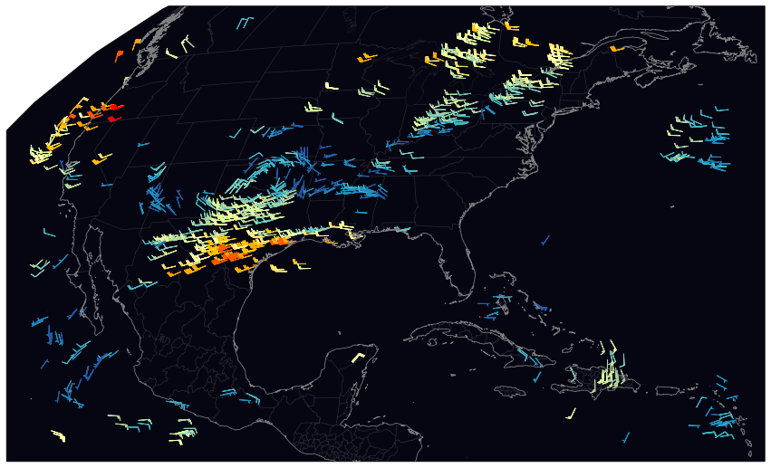
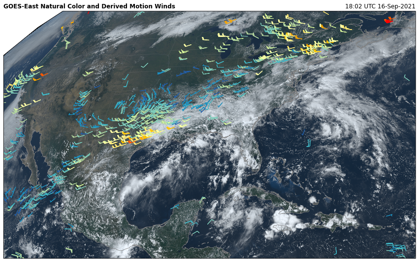

GOES Derived Motion Winds¶
[1]:
from goes2go.data import goes_nearesttime
# Tools from https://github.com/blaylockbk/Carpenter_Workshop
from toolbox.wind import spddir_to_uv
from toolbox.cartopy_tools import common_features, pc
from paint.standard2 import cm_wind
[2]:
# Download Level-2 derived motion wind ABI product
gwnd = goes_nearesttime('2021-09-16 18:00', product='ABI-L2-DMWVC')
_______________________________
| Satellite: noaa-goes16 |
| Product: ABI-L2-DMWVC |
| Domain: C |
📦 Finished downloading [1] files to [/p/cwfs/blaylock/data/noaa-goes16/ABI-L2-DMWVC].
📚 Finished reading [1] files into xarray.Dataset.
[3]:
# Download ABI Multi-channel product (for RGB background)
g = goes_nearesttime("2021-09-16 18:00", product="ABI")
_______________________________
| Satellite: noaa-goes16 |
| Product: ABI-L2-MCMIPC |
| Domain: C |
📦 Finished downloading [1] files to [/p/cwfs/blaylock/data/noaa-goes16/ABI-L2-MCMIPC].
📚 Finished reading [1] files into xarray.Dataset.
[4]:
# Convert GOES wind speed and direction to u- and v-wind components
gu, gv = spddir_to_uv(gwnd.wind_speed, gwnd.wind_direction)
[5]:
# Plot winds on a PlateCarree map
ax = common_features("10m", dark=True, figsize=[15, 10], STATES=True)
ax.barbs(
gwnd.lon,
gwnd.lat,
gu,
gv,
gwnd.wind_speed,
**cm_wind().cmap_kwargs,
length=5,
)
[5]:
<matplotlib.quiver.Barbs at 0x2b3a084c1910>

[6]:
# Plot winds on a Geostationary map
ax = common_features("10m", dark=True, figsize=[15, 10], STATES=True, crs=g.FOV.crs)
ax.barbs(
gwnd.lon.data,
gwnd.lat.data,
gu.data,
gv.data,
gwnd.wind_speed,
**cm_wind().cmap_kwargs,
length=5,
transform=pc,
)
[6]:
<matplotlib.quiver.Barbs at 0x2b3a20c302e0>

[7]:
# Plot on Geostationary map with NaturalColor RGB product
ax = common_features("10m", dark=True, figsize=[15, 10], STATES=True, crs=g.FOV.crs)
ax.barbs(
gwnd.lon.data,
gwnd.lat.data,
gu.data,
gv.data,
gwnd.wind_speed,
**cm_wind().cmap_kwargs,
length=5,
transform=pc,
)
ax.imshow(g.rgb.NaturalColor(), **g.FOV.imshow_kwargs)
ax.set_title(f"{g.orbital_slot} Natural Color and Derived Motion Winds", loc='left', fontweight='bold')
ax.set_title(f"{g.t.dt.strftime('%H:%M UTC %d-%b-%Y').item()}", loc="right")
[7]:
Text(1.0, 1.0, '18:02 UTC 16-Sep-2021')
